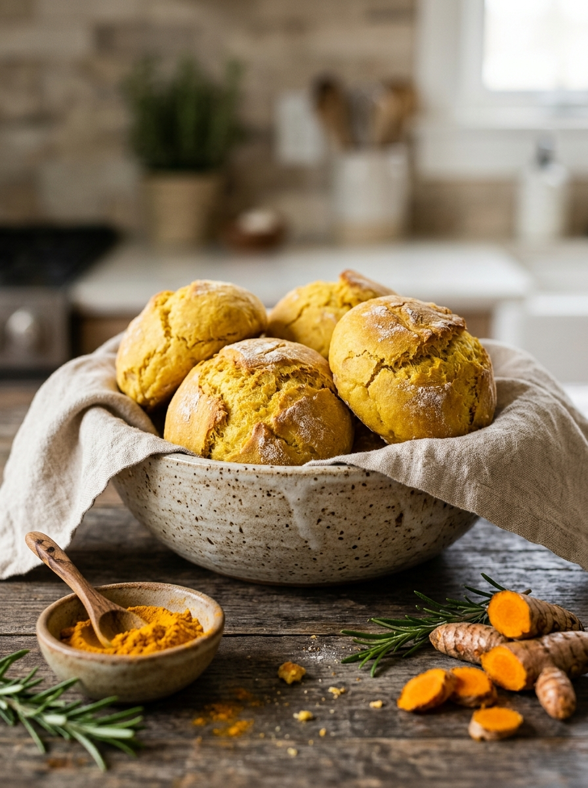
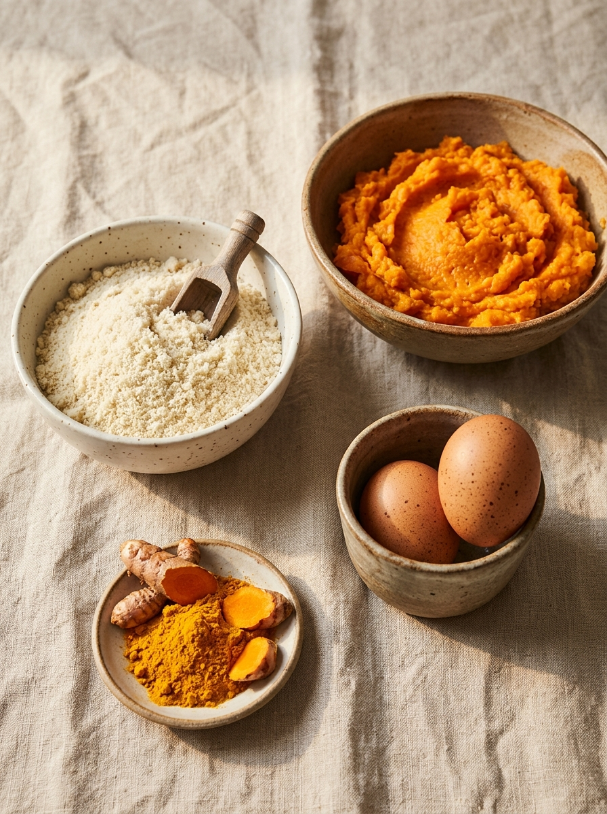
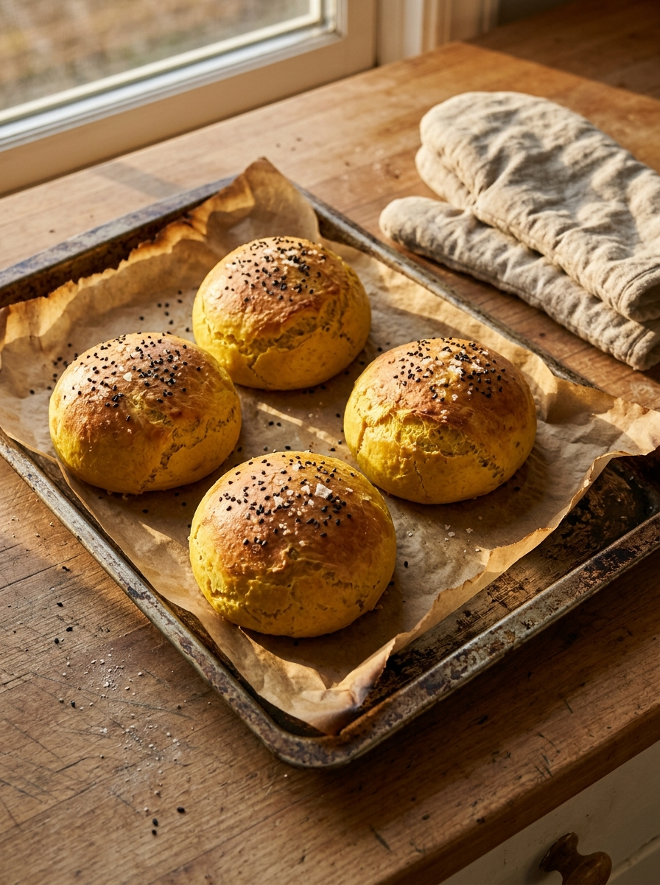
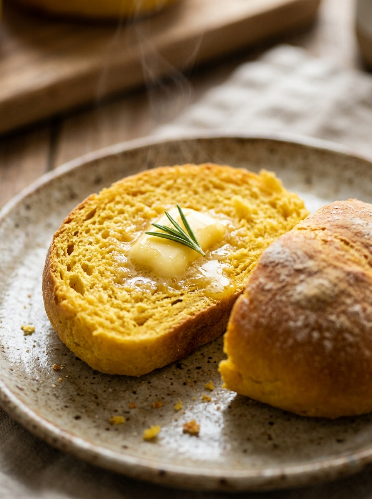
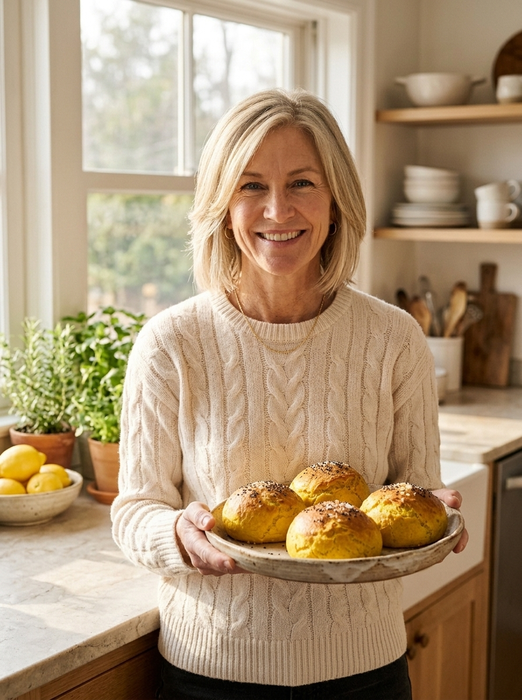

Claire's 4-Ingredient Flourless
Golden Turmeric Gut Buns

If you wake up with a calm, flat stomach only to watch it bloat and distend by 3 PM after a standard sandwich, your digestive lining is begging for a break from industrialized wheat, seed oils, and commercial yeast.
These golden turmeric buns are my holy-grail morning staple: zero flour, zero yeast, cloud-soft, and made with only 4 whole-food ingredients that actively calm silent intestinal inflammation while you eat.

Golden turmeric sweet potato buns resting on natural beige linen.
Why You'll Fall in Love with These Buns:
Zero Wheat Bloat or Yeast Fermentation
Standard grocery bread uses industrialized commercial yeast and grain gluten that ferment in slow-moving midlife guts, triggering heavy lower-belly distention. These buns digest peacefully in under 90 minutes.
Prebiotic Microbiome Scaffolding
Cooked and cooled sweet potato is loaded with resistant starch and soluble prebiotic fiber that nourish *Akkermansia* and *Bifidobacteria*, reinforcing the gut barrier and clearing dermal inflammation.
Activated Cellular Curcumin
Golden turmeric provides potent curcuminoids to cool systemic joint and gut aches. The essential pinch of black pepper delivers piperine, increasing bioavailability by 2,000%.
Authentic Cloud-Soft Crumb
Unlike dry, crumbly gluten-free store breads that taste like cardboard, superfine blanched almond flour and pastured eggs create a moist, pillowy bakery texture that toasts like a dream.
The 4 Clean Ingredients Explained
Every single ingredient has an intentional biological purpose. Here is why we use them:

Steamed or roasted until fork-tender. Do not boil in excess water so it doesn't get soggy. Supplies prebiotic resistant starch, natural beta-carotene for dermal turnover, and perfect natural moisture.
Use finely ground blanched almond flour (skins removed), not coarse almond meal. It provides monounsaturated fatty acids and Vitamin E to protect skin cell membranes and build a cloud-soft crumb.
Room temperature eggs provide structural lift and act as the clean biological binder. Rich in choline, lutein, and complete amino acids that support cellular repair.
Pure golden turmeric powder gives the buns their warm amber hue and potent curcumin anti-inflammatory power. The crack of black pepper ensures complete intestinal absorption.
Step-by-Step Visual Walkthrough
Whisk & Fold the Golden Dough
In a medium bowl, whisk together the mashed sweet potato and pasture-raised eggs for 60 seconds until a glossy, golden-orange emulsion forms. Add 1 cup superfine almond flour, 1 tsp golden turmeric, a pinch of black pepper, and 1/2 tsp baking powder (or cream of tartar). Fold gently with a spatula until a thick, scoopable dough forms. Let it rest on the counter for 3 minutes so the almond flour absorbs the moisture.
Shape the Rounds & Sprinkle Sesame Seeds
Line a metal baking sheet with unbleached parchment paper. With slightly damp hands, divide the dough into 4 equal mounds and shape them gently into smooth, round buns. Scatter black sesame seeds and flaky Maldon sea salt over the tops with a very light press so they adhere.

Bake to Golden Perfection at 375°F (190°C)
Transfer the sheet to the center rack of your preheated 375°F (190°C) oven. Bake for exactly 20 to 22 minutes until the tops are deeply golden-amber, lightly cracked, and resilient to a gentle touch.
Slice Warm, Spread Grass-Fed Butter & Savor
Allow the buns to cool on the baking sheet for 5 minutes. Slice in half with a serrated bread knife to reveal the warm, cloud-like, fluffy golden interior. Serve warm with grass-fed butter, mashed avocado, or alongside poached eggs.

Claire's 4-Ingredient Flourless Golden Turmeric Gut Buns
Ingredients Tap to check off
Instructions
-
1
Preheat & Prep: Preheat your oven to 375°F (190°C). Line a standard metal baking sheet with unbleached parchment paper.
-
2
Whisk Wet Base: In a mixing bowl, combine 1 cup mashed cooked sweet potato and 2 pasture-raised eggs. Whisk vigorously for 60 seconds until a smooth, glossy emulsion forms.
-
3
Incorporate Dry Ingredients: Add 1 cup superfine almond flour, 1 tsp golden turmeric powder, a pinch of black pepper, and 1/2 tsp baking powder. Fold with a spatula until a cohesive, thick dough forms. Rest for 3 minutes.
-
4
Shape the Buns: Using slightly damp hands, divide into 4 equal mounds on the baking sheet. Shape into round buns. Scatter black sesame seeds and flaky sea salt over the tops.
-
5
Bake: Bake at 375°F (190°C) for 20 to 22 minutes until deeply golden-amber on top and firm to the touch.
-
6
Cool & Slice: Allow to cool on the tray for 5 minutes. Slice in half with a serrated knife and serve warm with grass-fed butter.
- Next-Day Toasting: Slice leftover buns in half and toast for 2 minutes—the edges crisp while the center stays pillowy.
- Storage: Keep in an airtight glass container in the fridge for up to 5 days, or freeze sliced for up to 2 months.
- Savory Twist: Add 1/2 tsp garlic powder or fresh chopped rosemary directly into the dough.
Why Claire Pairs These Buns with CleanseSana
While sweet potato and turmeric soothe daily digestion and reduce acute food irritation, chronic midlife bloating often stems from sluggish bile flow, trapped waste biofilms, and slow lymphatic drainage.
CleanseSana provides a targeted, doctor-formulated herbal flush of black walnut hull, cascara sagrada, and botanical drainage herbs that clear stagnant waste, flatten lower-belly puffiness, and allow your gut lining to absorb nutrients at maximum efficiency.
FTC Transparency Disclosure: As an independent health mentor, I may earn an affiliate commission if you purchase through this link at no additional cost to you. I only endorse formulations backed by third-party testing.
Claire's Daily Ageless Essentials
Neotonics Gummy
500M CFU probiotic that speeds dermal turnover back to 28 days.
Java Burn Packet
Tasteless green tea extract packet stirred into morning coffee for steady burn.
CoreVital Burn
500mg Berberine HCl for arterial elasticity and glucose management.
28-Day Cell Renewal
Complete digital blueprint & meal schedules on Whop for $27.

Hi, I'm Claire Evans • 51 & Glowing Naturally
I mentor women 40+ on overcoming inflammatory weight gain, sluggish digestion, and thinning skin using 4-ingredient kitchen chemistry. When we feed our biology with respect, aging becomes our most radiant chapter.
Follow @claire.matureskin on Instagram →